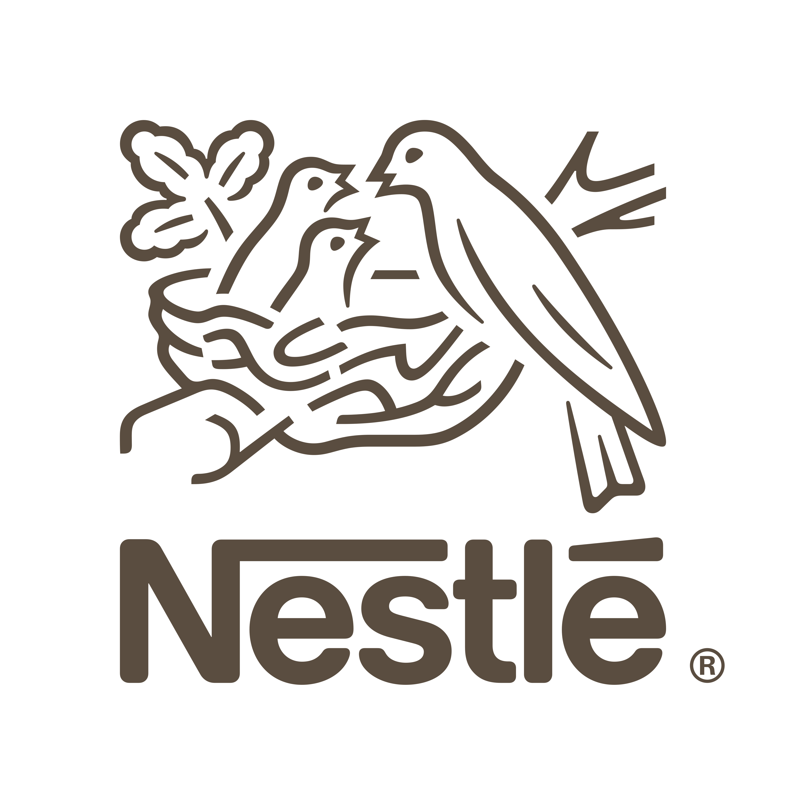
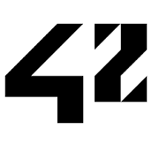
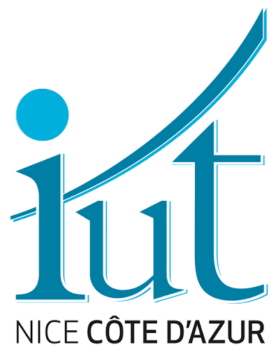

Data & Business Analyst | AI/ML Engineer | Tech Partner
SKEMA Business School (Finance & Data Analytics) and École 42 graduate. I combine financial analysis, data engineering, and AI to transform complex data into strategic decision-making levers. With 3 years of experience at Nestlé, I lead end-to-end data projects: from predictive ML models (Python) and Power BI dashboard architectures to field change management.
Enterprise Data Platforms, AI Systems & Business Analytics Solutions
Enterprise Data Platform
Deployed 10+ Power BI dashboards for 80+ daily users at Nestlé. Developed ML predictive sales models and Python/Shell automations.
LLM & RAG System
Structured inference system on LLMs combining RAG, prompt engineering, and logit constraints to generate strict JSON function calls.
Quant Stack & ML
Complete quantitative engine: financial data collection, ML alpha scoring, and strategy backtesting. First Step of the Natixis Challenge with ESCP students
Logistics VRP Optimization
Plateforme d'optimisation de routes logistiques. Solver VRP pour minimiser l'empreinte CO2 et la distance totale.
Machine Learning & Fraud Detection
Pipeline de détection de fraude bancaire avec XGBoost sur dataset déséquilibré. Optimisation du seuil basé sur le recall.
Financial API & Web Dashboard
Application web et API de données financières temps réel. Visualisation d'indicateurs boursiers et gestion d'utilisateurs.
Drone Delivery Simulation
Simulation Python de réseaux de livraison par drones avec algorithmes de pathfinding et visualisation.
Quantum Compiling Simulation
Challenge de concurrence basé sur le problème des Philosophes Dînant. Implémentation de mécanismes de prévention de deadlocks.
Sales Analytics Tool
Outil de reporting automatique sous Excel VBA. Automatisation des flux et formation des équipes utilisatrices.
Tech Stack & Business Capabilities
Data & Business Analytics | AI/ML Engineer | Finance | Freelance Developer
SKEMA Business School (MSc in Finance & Data Analytics) + École 42 graduate with 3+ years of experience at the intersection of business, data, and AI. I bridge the gap between technical teams and business stakeholders, turning complex data into actionable insights.
Structured, results-driven, and thriving in fast-paced environments where continuous learning is key. Passionate about AI systems, data platforms, and business transformation.
Independent Contractor | Showroomprivé Group (via subsidiary)

Nestlé France – Infant Nutrition
Nestlé Nespresso – Nice

École 42
Intensive project-based learning: C, C++, Python, SQL, Shell, Linux, Algorithms, Generative AI (LLM, RAG), Peer-learning.
SKEMA Business School
Specialization in Finance & Data Analytics. Advanced courses in financial modeling, statistics, machine learning, and business intelligence.

IUT
Sales training with practical experience at Nespresso retail stores.
Structured inference on Qwen3-0.6B model combining RAG, prompt engineering, and logit constraints. Guarantees reliable JSON outputs without external frameworks (Python, Hugging Face).
Imbalanced dataset classification using Random Forest and XGBoost. Feature engineering and performance evaluation (AUC-ROC) in Python.
Financial strategy modeling, performance analysis, and portfolio optimization using Python, XGBoost, and CatBoost.
Let's build something amazing together
I'm always open to discuss new projects, collaboration opportunities, or just to connect with fellow developers and data scientists.
Feel free to reach out through any of the channels below.